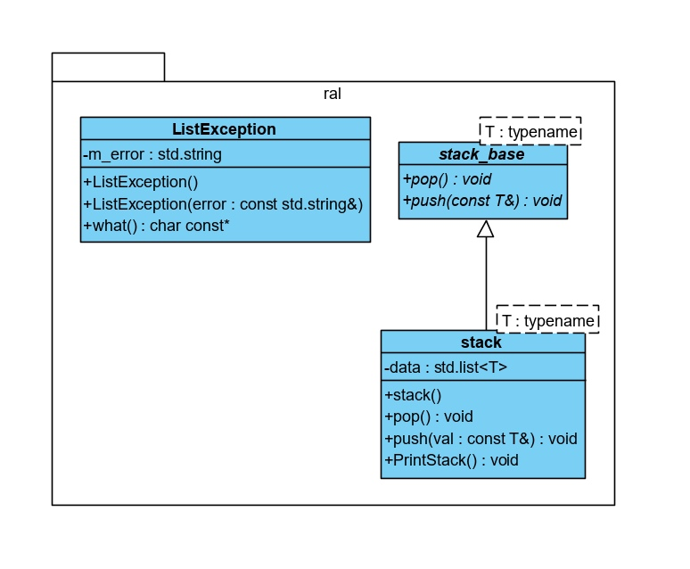

|
Лабораторная №6
|
Цель проекта в использовании паттерна "Адаптер" для реализации собственной структуры типа стек неограниченного размера, основанную на типе list из стандартной библиотеки.
Паттерна "Адаптер" паттерн полезен когда уже есть механизм выполняющий похожую задачу. Задача заключается в том, чтобы на его основе добиться желаемого результата.
В рамках данного проекта был написан свой стек на освнове std::list, а так же написан свой класс исключения для вытаскивания элемента из пустого массива.
UML-диаграмма классов проект представлена ниже:

1.8.17